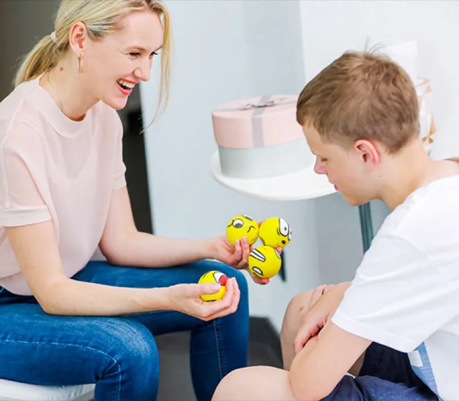
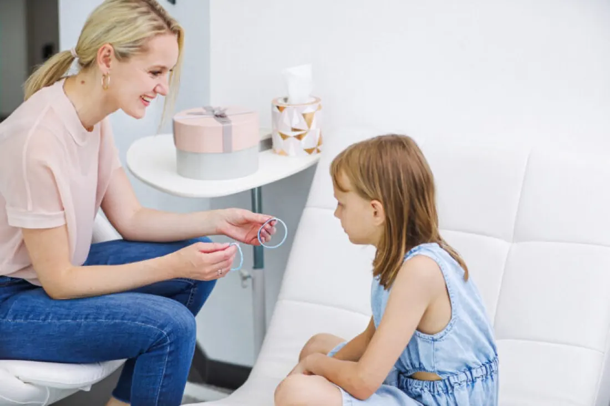
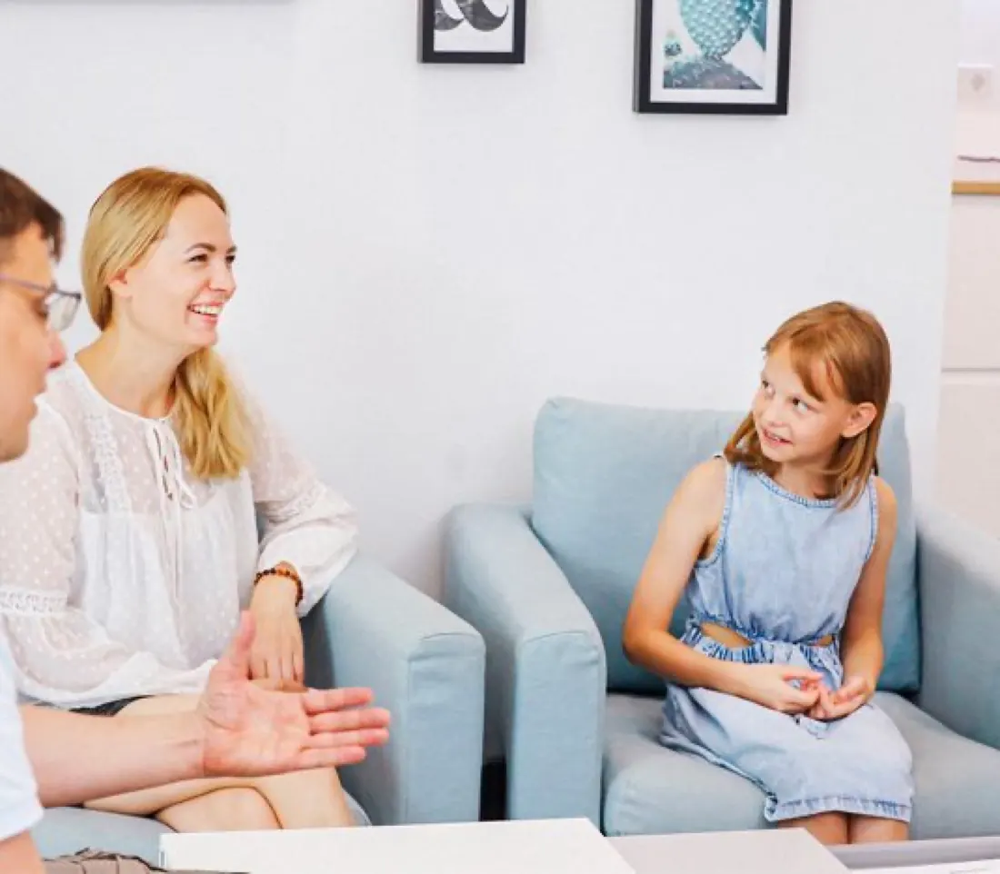
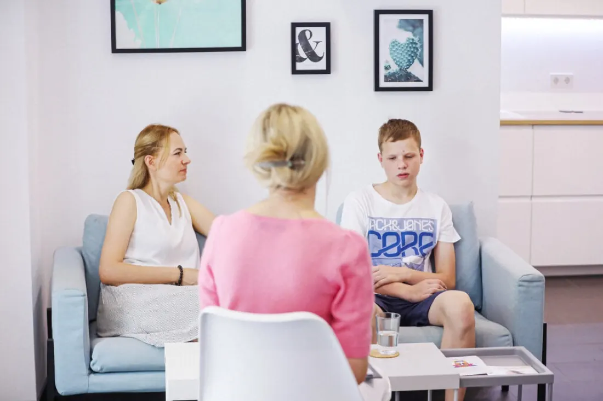

Wenn dein Kind wieder leichter durchs Leben gehen soll.
Ängste, starke Emotionen, Unsicherheit, Probleme in der Schule oder körperliche Beschwerden können ein Kind und die Familie sehr belasten. Doch Veränderung muss nicht kompliziert sein.
Ich arbeite mit Kindern spielerisch, kindgerecht und mit Bildern, Gefühlen und Vorstellungskraft. Für dein Kind kann sich das wie ein Spiel oder eine kleine innere Reise anfühlen – und gleichzeitig können dabei wichtige Veränderungen entstehen.

Und du weißt nicht mehr, was du noch tun kannst?
Vielleicht kennst du das:
Du möchtest nicht ständig beruhigen, diskutieren oder dein Kind dazu bringen, sich zusammenzureißen. Du möchtest, dass sich wirklich etwas verändert.
Kinder brauchen einen Zugang, der zu ihnen passt.
Kinder denken in Bildern, erleben Gefühle sehr intensiv und besitzen eine natürliche Vorstellungskraft. Genau das nutzen wir.
Dein Kind muss dabei nicht stundenlang über sein Problem sprechen. Für dein Kind kann es sich wie ein Spiel oder eine kleine innere Reise anfühlen – und trotzdem arbeiten wir gezielt an dem, was es belastet.

Bilder
Innere Bilder öffnen einen Zugang, den Worte allein oft nicht erreichen.
Gefühle
Wir arbeiten mit dem, was dein Kind wirklich fühlt – nicht nur mit dem Verhalten.
Vorstellungskraft
Das, was Kinder beim Spielen ganz natürlich tun – hier wird es zur Ressource.
Neue Erfahrungen
Aus einer neuen inneren Erfahrung entsteht eine neue Reaktion im Alltag.
Manchmal weiß ein Kind genau: „Eigentlich brauche ich keine Angst zu haben.“
Und trotzdem reagiert der Körper:
Solche Reaktionen laufen häufig automatisch ab. Deshalb reicht es nicht immer, nur darüber zu sprechen.
Wir arbeiten mit dem emotionalen Erleben – mit Bildern, Gefühlen und Erfahrungen. So bekommt dein Kind die Möglichkeit, eine schwierige Situation anders zu erleben und neue Reaktionsmöglichkeiten zu entwickeln.
Fünf Schritte – im Tempo deines Kindes.
Kennenlernen
Zuerst möchte ich verstehen, was dein Kind beschäftigt und was ihr verändern möchtet. Dabei geht es nicht nur um das Problem – ich möchte dein Kind kennenlernen.
Verstehen
Ich erkläre deinem Kind alles kindgerecht und verständlich. Kein Druck, kein „Du musst“. Dein Kind darf Fragen stellen und jederzeit sagen, wenn sich etwas nicht gut anfühlt.
Entdecken
Mit Bildern und Vorstellungskraft nähern wir uns der Situation und den damit verbundenen Gefühlen. Wir schauen: Was passiert? Was fühlt dein Kind? Was passiert dabei im Inneren?
Verändern
Dein Kind entdeckt neue Möglichkeiten und kann eine schwierige Situation innerlich anders erleben. Nicht „Ich muss anders reagieren“, sondern „Ich kann es auch anders erleben“.
Festigen
Die neue Erfahrung wird so gestärkt, dass sie auch im Alltag hilfreich sein kann. Schritt für Schritt, in einem Tempo, das zu deinem Kind passt.

Wir müssen nicht alles mit Worten erklären, um damit zu arbeiten. Gerade die Vorstellungskraft ermöglicht einen Zugang, der für Kinder oft viel natürlicher ist als ein langes Gespräch. Wir finden den Zugang, der zu deinem Kind passt.
Themen, bei denen ich häufig unterstütze.
Ängste & Unsicherheit
Prüfungsangst, Trennungsängste, Ängste vor bestimmten Situationen oder starke Unsicherheit.
Starke Emotionen
Wut, Traurigkeit, Überforderung oder emotionale Reaktionen, die schwer zu regulieren sind.
Schule & soziale Situationen
Schulängste, Konflikte, Mobbing-Erfahrungen, Unsicherheit oder Schwierigkeiten im sozialen Umfeld.
Selbstvertrauen & Selbstwert
Wenn dein Kind sich wenig zutraut, Angst vor Fehlern hat oder sich ständig mit anderen vergleicht.
Psychosomatische Beschwerden
Zum Beispiel wiederkehrende Bauch- oder Kopfschmerzen, wenn eine körperliche Ursache bereits abgeklärt wurde.
Belastende Erfahrungen
Schwierige Lebenssituationen, Veränderungen in der Familie oder andere emotionale Belastungen.

Dein Kind ist nicht das Problem.
Wenn ein Kind Angst hat, wütend wird, sich zurückzieht oder körperlich reagiert, gibt es dafür einen Grund.
Ich möchte nicht einfach das Verhalten „wegmachen“. Wir schauen, was dahintersteckt und was dein Kind wirklich braucht.
Denn wenn sich etwas im Inneren verändert, kann sich auch das Verhalten im Außen verändern.
Oft schneller, als Eltern denken.
Kinder können sich häufig sehr schnell auf neue innere Erfahrungen einlassen. Aus meiner Erfahrung sind bei vielen Kindern bereits 2–3 Sitzungen ausreichend, um deutliche Veränderungen anzustoßen.
Natürlich ist jedes Kind und jedes Thema individuell. Deshalb schauen wir immer gemeinsam, was dein Kind wirklich braucht – nicht möglichst lange, sondern so viel, wie sinnvoll ist.
Du musst die Lösung nicht alleine finden.
Wenn es dem eigenen Kind nicht gut geht, ist das auch für Eltern belastend. Man macht sich Sorgen. Man sucht nach Antworten. Man probiert vieles aus. Und irgendwann kommt vielleicht der Gedanke: „Ich weiß einfach nicht mehr, was ich noch tun soll.“
Du musst nicht bereits wissen, warum dein Kind so reagiert. Das finden wir gemeinsam heraus.
Alles, was Eltern mich oft fragen.
Muss mein Kind selbst mitmachen wollen?
Es ist hilfreich, wenn dein Kind offen für das Coaching ist. Es muss aber nicht bereits wissen, was es verändern möchte.
Ich hole dein Kind dort ab, wo es gerade steht, und gestalte die Arbeit passend zu seinem Alter und seiner Persönlichkeit.
Muss mein Kind viel über seine Probleme erzählen?
Nein. Wir arbeiten mit Bildern, Gefühlen und Vorstellungskraft – dein Kind muss nicht alles in Worte fassen können.
Ist das wie eine klassische Therapie?
Mein Coaching ist keine klassische Gesprächstherapie. Wir arbeiten spielerisch und erlebnisorientiert mit inneren Bildern, Gefühlen und Erfahrungen.
Für das Kind kann sich der Prozess häufig eher wie eine kleine innere Reise oder ein Spiel anfühlen.
Wie viele Sitzungen braucht mein Kind?
Das ist individuell und hängt vom Thema und vom Kind ab. Aus meiner Erfahrung sind bei vielen Kindern bereits 2–3 Sitzungen ausreichend, um deutliche Veränderungen anzustoßen.
Natürlich schauen wir immer individuell, was dein Kind wirklich braucht.
Wie läuft das Erstgespräch ab?
Das erste Gespräch findet telefonisch mit dir als Elternteil statt. Du erzählst mir, was euch gerade beschäftigt, und ich stelle dir die Fragen, die wichtig sind, um eure Situation gut zu verstehen.
Wir klären gemeinsam, ob und wie ich dein Kind unterstützen kann. Das Erstgespräch ist kostenlos und unverbindlich.
Was passiert nach dem Erstgespräch?
Wenn alle Fragen geklärt sind und wir gemeinsam entscheiden, dass mein Coaching für euch passend ist, beginnt anschließend die eigentliche Arbeit mit deinem Kind.
Wir besprechen den weiteren Ablauf und vereinbaren die ersten Termine. Du weißt also vor Beginn genau, wie es weitergeht.
Ab welchem Alter ist Online-Coaching möglich?
Online arbeite ich mit Kindern in der Regel ab etwa 7–8 Jahren. Entscheidend ist dabei nicht nur das Alter, sondern auch, ob sich das Kind auf die Online-Situation einlassen kann und sich damit wohlfühlt.
Bei älteren Kindern und Jugendlichen funktioniert das Online-Coaching häufig sehr gut.
Muss ich als Elternteil bei der Sitzung dabei sein?
Das hängt vom Alter, vom Thema und von deinem Kind ab. Beim Erstgespräch klären wir gemeinsam, welcher Rahmen für euch am sinnvollsten ist.
Wichtig ist immer, dass dein Kind sich sicher fühlt und sich frei auf die Arbeit einlassen kann.
Dein Kind bringt bereits vieles mit.
Manchmal braucht es nur einen passenden Zugang, damit diese Fähigkeiten wieder genutzt werden können.
Und dein Kind darf entdecken, was in ihm selbst möglich ist.
Du musst heute noch keine Entscheidung treffen.
Erzähl mir einfach, was euch gerade beschäftigt. Das erste Gespräch findet telefonisch statt – wir schauen gemeinsam auf eure Situation und klären, ob und wie ich euch unterstützen kann. Wenn alles passt, starten wir anschließend mit der Arbeit.
Vielleicht beginnt Veränderung genau mit diesem ersten Gespräch.